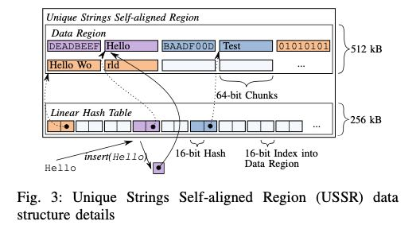

Efficient Query Processing with Optimistically Compressed Hash Tables & Strings in the USSR
大致提出了3个在Hash Table和Strings上的优化思路，但是感觉每个都不是特别好应用起来，可能某些场景下可以使用起来：
domain-guided prefix suppression. 作者是用在压缩multi-column作为group key上，思路很简单就是把每个key减去min value, 这样需要表示的bits就少了，然后多个key通过bit-packing放在一起组成int32,int64或者是int128.
optimistic splitting. 可以认为是冷热数据各走两套逻辑，或者是按照数据性质走两套逻辑，可能一套逻辑执行非常快可以cover大部分cases. 比如我需要做count distinct, 虽然value是int64, 但是如果大部分value都是落在int32内，那么这个hashset可以做的更高效。
USSR(User Strings Self-Aligned Reion): 说白了就是把一个执行逻辑内可能出现的strings做成unique strings. 这样比较起来就会比较快。思想倒不是特别新，但是实现方法比较有意思。

整个结构占用768KB, 第一个部分是hash table, 第二个部分就是data array. HT里面每个bucket是4个字节，2个字节表示高16bits, 低16bits用来选择bucket. 剩下2字节来作为data array offset. 在data array上，指针前面8个字节存储具体的hash value, 然后再存储具体值（不需要存储长度吗？）
计算hash可以取前面8个字节，比较的时候判断是不是落在一个USSR内，如果是的话直接比较指针即可。
inline uint64_t hash(char* s) { if (((uintptr_t)s & USSR_MASK) != ussr_prefix) return strhash(s); // compute hash return ((uint64_t*) (s))[-1]; // exploit pre-computed hash } inline bool equal(char* s, char* t) { if ((((uintptr_t)s & USSR_MASK) != ussr_prefix) | (((uintptr_t)t & USSR_MASK) != ussr_prefix)) return strcmp(s, t)==0; // regular string comparison return s==t; // pointer equality is enough in USSR }